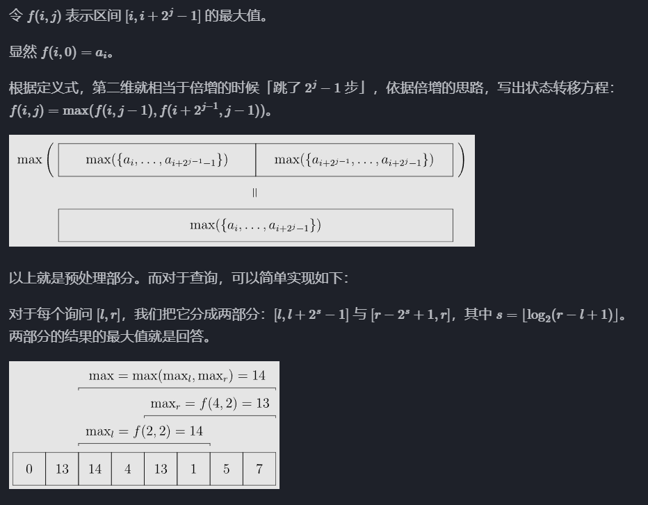

算法精选
此篇为在做题过程中的获得的感悟以及比较常用的知识 ~
长期持续更新中......
auto用法
1.遍历
与范围for循环结合使用
| #include <iostream>
#include <vector>
int main() {
vector<int> vec = {1, 2, 3, 4, 5};
// 使用 auto 关键字和范围for循环
for (auto& elem : vec) {
cout << elem << endl; // 自动推导 elem 的类型为 int&
}
return 0;
}
|
| #include <iostream>
#include <map>
int main() {
map<string, int> myMap = {{"apple", 1}, {"orange", 2}, {"pear", 3}};
// 使用 auto 关键字和范围for循环
for (auto& pair : myMap) {
cout << pair.first << ": " << pair.second << endl; // 自动推导 pair 的类型为 pair<const string, int>&
}
return 0;
}
|
| #include <iostream>
#include <array>
int main() {
array<int, 5> arr = {1, 2, 3, 4, 5};
// 使用 auto 关键字和范围for循环
for (auto& elem : arr) {
cout << elem << endl; // 自动推导 elem 的类型为 int&
}
return 0;
}
|
2.自动推导变量类型
| auto max_it = max_element(h.begin(),h.end());
//auto自动推导变量类型
|
浮点数取整和精度
取整
floor函数
把一个小数向下取整floor(doube x)
| double i = floor(2.2);
double j = floor(-2.2);
cout << "The floor of 2.2 is " << i << endl; //2
cout << "The floor of -2.2 is " << j << endl; //-3
|
ceil函数
把一个小数向上取整ceil(doube x)
| double i = ceil(2.2);
double j = ceil(-2.2);
cout << "The ceil of 2.2 is " << i << endl; //3
cout << "The ceil of -2.2 is " << j << endl; //-2
|
round函数
把一个小数四舍五入round(doube x)
| double i = round(2.2);
double x = round(2.7);
double j = round(-2.2);
double y = round(-2.7);
cout << "The round of 2.2 is " << i << endl; //2
cout << "The round of 2.7 is " << x << endl; //3
cout << "The round of -2.2 is " << j << endl; //-2
cout << "The round of -2.7 is " << y << endl; //-3
|
精度
在输出过程中控制精度：
| cout << fixed << setprecision(n) << val << endl;
//其中 n>=0 ，表示保留n位有效数字
|
与取整结合：
| cout << fixed << setprecision(0) << round(val) << endl;
|
重载运算符
重载运算符分为两种情况，重载为成员函数或非成员函数。
其基本格式为（假设需要被重载的运算符为 @）：
| class Example {
// 成员函数的例子
返回值 operator@(除本身外的参数) { /* ... */ }
};
// 非成员函数的例子
返回值 operator@(所有参与运算的参数) { /* ... */ }
|
例：
| struct Edge{ //边的结构体
int u,v,w; //u 和 v 为边的两个端点，w 为权重
bool operator < (const Edge& e) const {
return w >e.w; //// 用于按边的权重降序排序
}
}
|
关于方向数组
在解题过程中我们常会运用网格（grid），来模拟二维平面，控制移动则需要方向数组。
以二维平面上的上下左右四个方向为例：
| int dir[4][2] = {{0,1},{1,0},{-1,0},{0,-1}}
|
dir 是一个二维数组，有 4 行（表示 4 个方向）和 2 列（分别表示 x 轴和 y 轴的偏移量）。- 通常第一个坐标代表列 第二个坐标代表行
- 每个方向用一个二维数组表示，例如：
{0, 1} 表示向右移动。{1, 0} 表示向下移动。{-1, 0} 表示向上移动。{0, -1} 表示向左移动。
在方向数组中：
dir[i][0] 表示第 i 个方向在 x 轴上的偏移量。dir[i][1] 表示第 i 个方向在 y 轴上的偏移量。
即方向数组dir[i][j]中第一个索引为方向，第二个索引为维度，数组内部方向的交换并不影响偏移量的对应。
再议vector
vector的二维初始化：
行列长度均固定 n行 m列，初始值为0如下
| vector<vector<int>> a(n, vector<int>(m, 0));
|
则a.size()表示行数 a[0].size()表示列数
数组
二分查找
模板：
| int l,r,min;
l = 0;
r = numsSize -1;
while(r>l){
min = l + (l + r)/2;
if(nums[min] > target){
r = min - 1;
}
else if(nums[min] < target){
l = min + 1;
}
else{
return min;
}
return -1;
}
|
给定一个排序数组和一个目标值，在数组中找到目标值，并返回其索引。如果目标值不存在于数组中，返回它将会被按顺序插入的位置。
请必须使用时间复杂度为 O(log n) 的算法。
| int searchInsert(vector<int>& nums, int target) {
int l,r,m;
l = 0;
r = numsSize -1;
if(target <= nums[0]){
return 0;
}
if(target >= nums[numsSize - 1]){
return numsSize;;
}
else{
while(r>l){
m = l + (l + r)/2;
if(nums[m] > target){
r = m - 1;
}
else if(nums[m] < target){
l = m + 1;
}
else{
return m;
}
}
return l + 1;
}
}
|
ST表
ST 表（Sparse Table，稀疏表）是用于解决 可重复贡献问题 的数据结构。
具体实现如下：

回溯
回溯三部曲：
模板：
| void backtracking(参数) {
if (终止条件) {
存放结果;
return;
}
for (选择：本层集合中元素（树中节点孩子的数量就是集合的大小）) { //横向遍历
处理节点;
backtracking(路径，选择列表); // 递归 纵向遍历
回溯，撤销处理结果
}
}
|
DP
背包
0-1背包
i 来表示物品、j表示背包容量，初始化：
| // 初始化 dp
vector<vector<int>> dp(weight.size(), vector<int>(bagweight + 1, 0));
for (int j = weight[0]; j <= bagweight; j++) {
dp[0][j] = value[0];
}
|
先遍历物品，然后遍历背包重量：
| // weight数组的大小 就是物品个数
for(int i = 1; i < weight.size(); i++) { // 遍历物品
for(int j = 0; j <= bagweight; j++) { // 遍历背包容量
if (j < weight[i]) {
dp[i][j] = dp[i - 1][j];
}
else {
dp[i][j] = max(dp[i - 1][j], dp[i - 1][j - weight[i]] + value[i]);
}
}
}
return dp[n - 1][bagweight];
|
状态转移方程 dp[i][j] = max(dp[i - 1][j], dp[i - 1][j - weight[i]] + value[i]);
初始化：
| vector<int> dp(bagweight + 1, 0);
|
遍历：
| // 外层循环遍历物品
for (int i = 0; i < M; ++i) {
// 内层循环从 N 空间逐渐减少遍历背包容量
for (int j = N; j >= costs[i]; --j) {
// 考虑当前研究材料选择和不选择的情况，选择最大值
dp[j] = max(dp[j], dp[j - costs[i]] + values[i]);
}
}
return dp[N];
|
状态转移方程 dp[j] = max(dp[j], dp[j - weight[i]] + value[i]);
图论
存图方法：
例如
邻接表存储：
| vector<int> a[N]; // 存储图的邻接表
|
| a[1] = {2, 3};
a[2] = {1, 3};
a[3] = {1, 2, 4};
a[4] = {3};
|
代码：
| #include <iostream>
#include <vector>
using namespace std;
const int N = 1000; // 最大点数
vector<int> adj[N]; // 邻接表
int main() {
int n, m; // n个节点，m条边
cin >> n >> m;
for (int i = 0; i < m; i++) {
int u, v;
cin >> u >> v;
adj[u].push_back(v);
adj[v].push_back(u); // 无向图需要双向存储
}
return 0;
}
|
代码：
| #include <iostream>
using namespace std;
const int N = 1000;
int graph[N][N]; // 直接存邻接矩阵
int main() {
int n, m;
cin >> n >> m;
for (int i = 0; i < m; i++) {
int u, v;
cin >> u >> v;
graph[u][v] = 1;
graph[v][u] = 1; // 无向图需要双向存储
}
return 0;
}
|
拓展：加权图
| graph[u][v] = w; // 存储权重 w
|
- 树（稀疏图）一般用 邻接表。
- 稠密加权图（如 Floyd-Warshall）一般用 邻接矩阵。
- 最小生成树（MST）一般用 边列表。
- 网络流、动态添加边一般用 链式前向星。
dfs
模板：
| int dir[4][2] = {{0,1},{1,0},{-1,0},{0,-1}};
void dfs(const vector<vector<int>>& grid, vector<vector<bool>>& visited, int x, int y){
//
if(visited[x][y] || grid[x][y] == 0) return;
visited[x][y] = true;
for(int i = 0;i<4; i++){
int nextx = x + dir[i][0];
int nexty = y + dir[i][1];
if(nextx<0 || nexty<0 || nextx>=grid.size() || nexty>=grid[0].size()) continue;
//grid.size()表示行数 grid[0].size()表示列数
dfs(grid,visited,nextx,nexty);
// 注意：一些题（包括此模板）是用dfs标记 不用回溯
//而在一些寻找路径的题中用dfs需要回溯
}
}
|
| public:
vector<vector<int>> ans;// 用于存储所有路径
vector<int> stk;// 用于存储当前路径
void dfs(vector<vector<int>>& graph, int x, int n) {
//x 是当前节点
//n 是目标节点的编号（graph.size() - 1）
if (x == n) {
ans.push_back(stk);
return;
}
//**********************************************
for (auto& i : graph[x]) {//遍历节点 x 的所有邻接节点并存在i中
stk.push_back(i);// 将邻接节点加入当前路径
dfs(graph, i, n);// 递归遍历邻接节点
stk.pop_back();// 回溯：移除当前节点，恢复路径
}
}
//************************************************************8
vector<vector<int>> allPathsSourceTarget(vector<vector<int>>& graph) {//主函数：
stk.push_back(0);// 将源点（节点 0）加入当前路径 stk
dfs(graph, 0, graph.size() - 1);//从源点（节点 0）开始，目标节点为 graph.size() - 1
return ans;//返回存储所有路径的二维向量
}
};
|
| for (int i = 1; i <= n; i++) { // 遍历节点x链接的所有节点
if (graph[x][i] == 1) { // 找到 x链接的节点
path.push_back(i); // 遍历到的节点加入到路径中来
dfs(graph, i, n); // 进入下一层递归
path.pop_back(); // 回溯，撤销本节点
}
}
|
bfs
模板：
| int dir[4][2] = {0, 1, 1, 0, -1, 0, 0, -1}; // 表示四个方向
// grid 是地图，也就是一个二维数组
// visited标记访问过的节点，不要重复访问
// x,y 表示开始搜索节点的下标
void bfs(vector<vector<char>>& grid, vector<vector<bool>>& visited, int x, int y) {
queue<pair<int, int>> que; // 定义队列
que.push({x, y}); // 起始节点加入队列
visited[x][y] = true; // 只要加入队列，立刻标记为访问过的节点
while(!que.empty()) { // 开始遍历队列里的元素
pair<int ,int> cur = que.front(); que.pop(); // 从队列取元素
int curx = cur.first;
int cury = cur.second; // 当前节点坐标
for (int i = 0; i < 4; i++) { // 开始想当前节点的四个方向左右上下去遍历
int nextx = curx + dir[i][0];
int nexty = cury + dir[i][1]; // 获取周边四个方向的坐标
if (nextx < 0 || nextx >= grid.size() || nexty < 0 || nexty >= grid[0].size()) continue; // 坐标越界了，直接跳过
if (!visited[nextx][nexty]) { // 如果节点没被访问过
que.push({nextx, nexty}); // 队列添加该节点为下一轮要遍历的节点
visited[nextx][nexty] = true; // 只要加入队列立刻标记，避免重复访问
}
}
}
}
|
Kruskal 算法
Kruskal 算法的核心思想是：
- 排序：首先对所有边按权值从小到大排序。
- 选择边：依次遍历排序后的边，对于每一条边，检查它的两个端点是否已经在同一棵树中（即它们是否已经连通）。如果没有连通，则将这条边加入生成树，并合并两个集合。
- 避免环：使用并查集来检测是否会形成环。如果两个端点已经在同一个集合中，就跳过这条边。
则要利用并查集：
- 并查集（Union-Find）是用于快速判断两个节点是否在同一集合中的数据结构。通过路径压缩和按秩合并等技术，能够保证每次查询和合并操作的时间复杂度非常低。
- 在
kruskal 中，find(u) 用来查找 u 的祖先节点，p[pv] = pu; 用来合并两个集合，这样就确保了不会添加重复的边，避免了环的产生。
例：
| struct Edge{ //边的结构体
int u,v,w; //u 和 v 为边的两个端点，w 为权重
bool operator < (const Edge& e) const {
return w >e.w; //// 用于按边的权重降序排序
}
}
Edge edge[M]; // 存储所有边的数组
vector<pair<int,int>> g[N]; // 邻接表存储图
int p[N+1];// 并查集，用于记录每个节点的父节点
void kruskal(){
sort(edge,edge+m); // 将所有边按权重降序排序
for(int i = 0; i < m; i++){
auto[u,v,w] = edge[i];//解构了边的信息：u 和 v 是边的两个端点，w 是边的权值
int pu = find(u), pv = find(v);// 查找 u 和 v 所在的祖先节点
if(pu != pv){// 如果 u 和 v 不在同一棵树中
p[pv] = pu;// 合并 u 和 v 所在的集合
g[u].push_back({v,w});//无向图
g[v].push_back({u,w});
}
}
}
|
通过这种方法，Kruskal 算法能够在多种图结构中高效地找到最小生成树（或最大生成树），并且保证时间复杂度接近 O(E log E)，其中 E 是图中边的数量。
数论
gcd，lcm
求gcd可以直接引用stl中的函数：
lcm没有专有函数：
$ \text{lcm}(a, b) = \frac{|a \times b|}{\text{gcd}(a, b)} $
$ \text{lcm}(a, b,c) = \frac{|a \times b \times c|}{\text{gcd}(a, b, c )} $
| lcm(a,b) = a*b / gcd(a,b)
//但是写程序时应该是 a /gcd(a,b) *b 因为a*b可能会超出数据范围
|